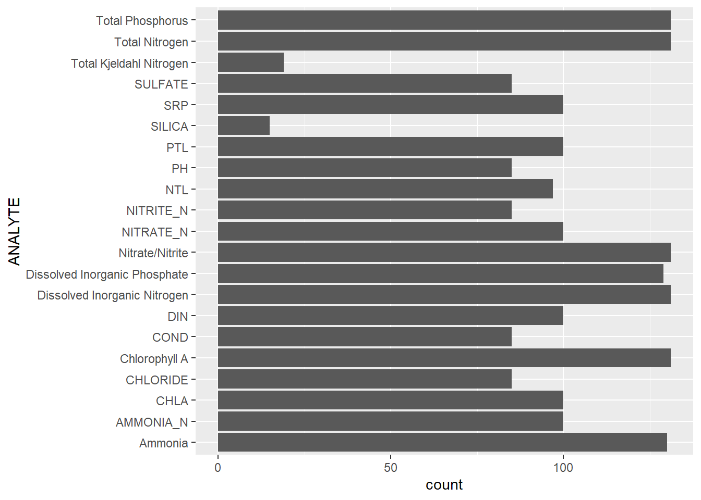
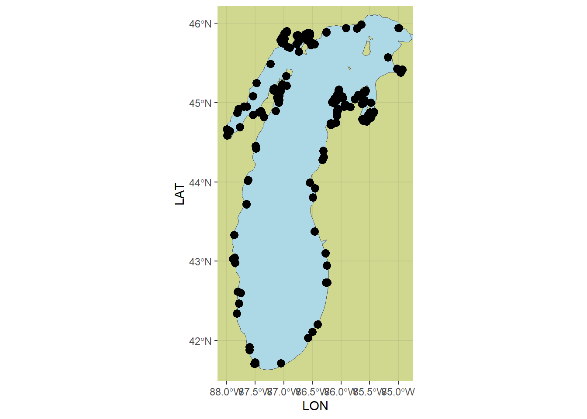
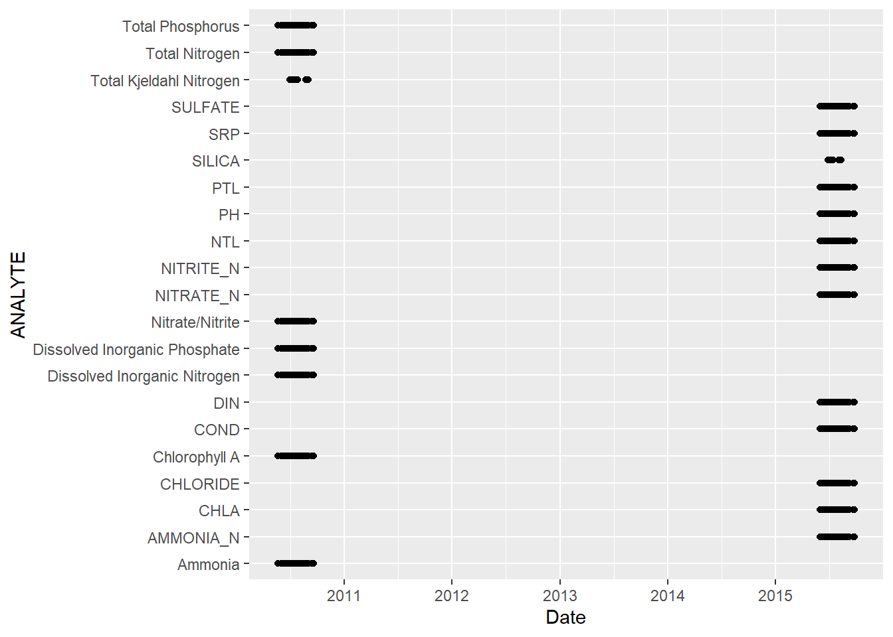
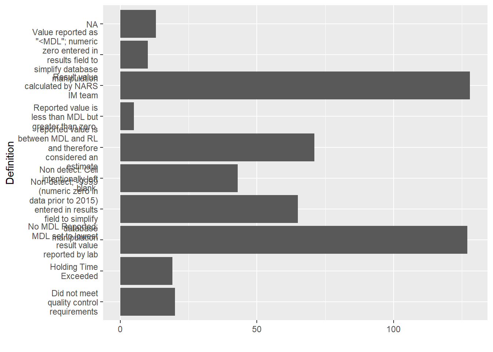
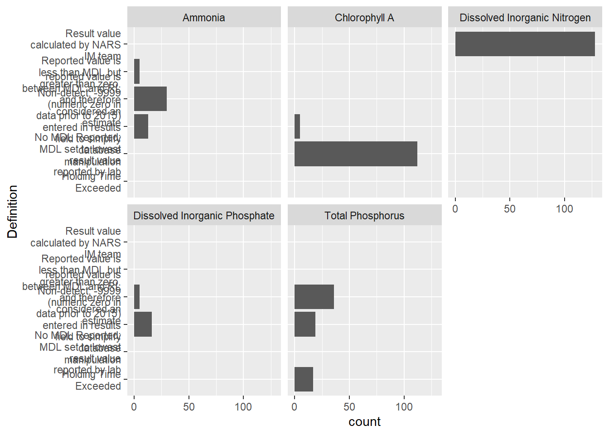
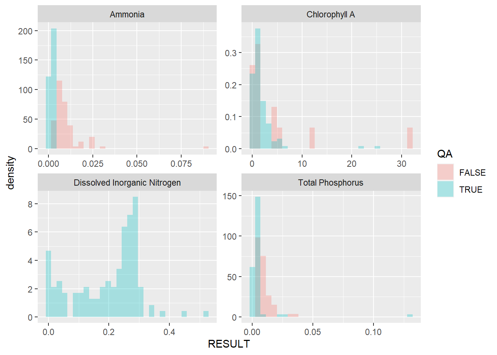
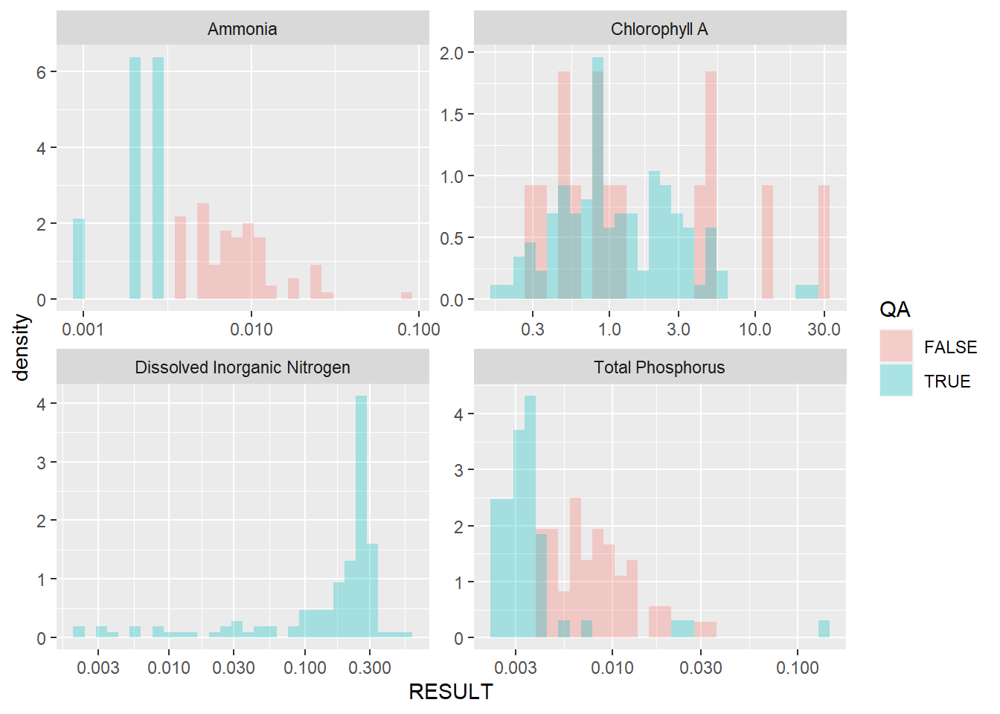

Exploring NCCA
Parameters
8 parameters

Spatial
- All values have a site, lat, and lon

Temporal

QA codes
- Need to find a key how to translate these codes?

Units
| ANALYTE | UNITS |
|---|---|
| AMMONIA_N | MG N/L |
| AMMONIA_N | NA |
| Ammonia | mg N/L |
| CHLA | UG/L |
| CHLORIDE | MG/L |
| COND | US/CM AT 25 C |
| Chlorophyll A | ug/L |
| DIN | MG/L |
| Dissolved Inorganic Nitrogen | mg N/L |
| Dissolved Inorganic Phosphate | mg P/L |
| NITRATE_N | MG N/L |
| NITRATE_N | NA |
| NITRITE_N | MG N/L |
| NITRITE_N | NA |
| NTL | MG/L |
| Nitrate/Nitrite | mg N/L |
| PH | STD. UNITS |
| PTL | MG/L |
| PTL | NA |
| SILICA | MG/L |
| SRP | MG P/L |
| SRP | NA |
| SULFATE | MG/L |
| Total Kjeldahl Nitrogen | mg N/L |
| Total Nitrogen | mg N/L |
| Total Phosphorus | mg P/L |
- all analytes have same units !!!! yay!
ANALYTES with lots of QA flags

Distributions


- looks like imputatons were already carried out for this dataset